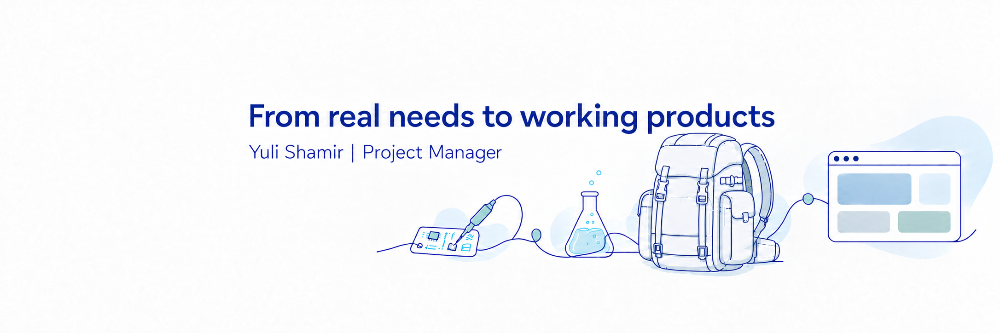

מצרכים אמיתיים בשטח למוצרים ופרויקטים עובדים.
מנהלת פרויקטים עם רקע בתפעול טכני, פיקוד והובלת צוותים וולידציה הנדסית. כקצינת טכנולוגיה ואחזקה הובלתי צוותים של עד 30 אנשי צוות, ניהלתי תוכניות עבודה וריכזתי סדרי עדיפויות, משאבים וכשירות אמצעים מול 4 גדודים במפקדת החטיבה. במקביל לשירות יזמתי והובלתי את פיתוח מערכת מב"ט לדיווח כשירות ומעקב תקלות, ופיתחתי את הקונספט ושרטוטי התכנון לתיק אחזקה מבצעי הנמצא כיום בשימוש צוותי אחזקה בשטח. קודם לכן עבדתי כמהנדסת ולידציה במכון התקנים הישראלי.

הבעיה והמשתמשים
בתפקידיי בגדוד ובחטיבה ראיתי כיצד דיווחים ידניים מפוצלים בוואטסאפ מקשים על קבלת תמונת כשירות אמינה. אנשי השטח נדרשו לדווח תקלות ללא מחשב זמין ותחת מגבלות קליטה, בעוד המפקדים נדרשו לתמונת מצב ברורה וזמינה.
תפקידי בהובלת הפרויקט
יזמתי את הפרויקט ותרגמתי את צרכי השטח לדרישות מערכת, תרשימי זרימה (User Flows) ותעדוף פיצ'רים. עבדתי בצמוד עם מפתח תוכנה משלב הקונספט ועד למוצר עובד, סקרתי איטרציות, אישרתי גרסאות והטמעתי משוב ממשתמשים בשטח.
תכולת המוצר ואימפקט
המערכת כוללת דשבורד אחוזי כשירות (ענף קווי ואורגני), דיווח תקלות ב-4 שלבים השומר נתונים בתור מקומי ללא קליטה, פענוח אוטומטי של הודעות וואטסאפ ו-CSV, הרשאות בעלים/עורך/צופה הנאכפות בשרת, והתרעות בוקר אוטומטיות בפעמון.
הנתונים בדמו זה מוצגים באחוזים בלבד עם מזהים פיקטיביים, ללא כמויות אמצעים וללא פרטים מסווגים.
המערכת מזהה אוטומטית את האמצעי, הסטטוס והתקלה מתוך ההודעה החופשית ומעדכנת את תמונת הכשירות:
[
{ "id": "דמו-928", "status": "כשיר", "location": "נקודת בראבו" },
{ "id": "דמו-774", "status": "לא כשיר", "issue": "תקלת כיול" },
{ "id": "דמו-512", "status": "כשיר", "category": "אורגני" }
]
| צורך המשתמש בשטח ובפיקוד | דרישת המוצר בתכולת המערכת | מימוש במערכת מב"ט |
|---|---|---|
| הבנת תמונת הכשירות בזמן אמת | דשבורד המציג אחוזי כשירות ותקלות פתוחות לפי ענף ודרג | מתג ענף קווי וענף אורגני, מד אחוז כשירות חי וסינון לפי פלוגה ומחלקה |
| מעקב אחר תקלות מתמשכות | ניהול סטטוס תקלות ומנגנון התרעות אוטומטי ללא חלונות קופצים | בדיקת בוקר יומית בפעמון: 7 ימים בתיקון, ירידה מתחת ל-70% כשירות, 3 ימים תקלה חמורה ותזכורת בחינות חודשית |
| עבודה בתנאי קליטה מוגבלת | פונקציונליות Offline מלאה לשימוש בשטח ובתמרון | שמירת דיווחים בתור מקומי במכשיר וסנכרון אוטומטי בחזרת החיבור |
| בקרת גישה ומידע מותאם תפקיד | ניהול הרשאות מבוסס תפקיד (RBAC) וכניסה מאובטחת | הזדהות ב-4 שלבים (רשימת מורשים, סיסמה, טלפון וקוד SMS) והרשאות בעלים, עורך וצופה הנאכפות בשרת |
| שיתוף דוחות מהיר בין דרגים | קליטה וייצוא של דוחות וואטסאפ, CSV ו-PDF | מנוע פענוח טקסט חופשי מוואטסאפ וייצוא דוחות מובנים לדרג הממונה |
הצורך מהשטח
אנשי אחזקה בשטח נדרשים לארגן, לשאת ולשלוף כלי עבודה וציוד בדיקה תוך תנועה רגלית בתוואי שטח משתנה. התכנון נדרש לתת מענה לנוחות נשיאה, ארגון קבוע של הציוד, נגישות מהירה לכלים וניידות בטיפול במערכות טכניות שונות.
התרומה התכנונית שלי
זיהיתי את הצרכים המעשיים בשטח ויצרתי שרטוטי תכנון לתיק אחזקה ייעודי. הדרישות שהגדרתי התייחסו לאופן נשיאת התיק על הגב, אופן חלוקת התאים הפנימית, והגעה מהירה לפריט הנדרש בזמן משימת אחזקה.
תיאום, בחינה והטמעה
שיתפתי פעולה עם גורמי פיקוד בכירים בגזרה כדי להגיש את התכנון לבחינה צבאית ולהמשך פיתוח מול ספקי צה"ל. התיק אומץ ונמצא כיום בשימוש שוטף של צוותי אחזקה בגדודים מבצעיים, בתמיכה ברכבים ממוגנים, רחפנים ואמצעים נוספים.

תא עליון לנגישות מהירה לציוד בדיקה ודיאגנוסטיקה
תוכנן בחלק העליון והנגיש של התיק כדי לאפשר לטכנאי בשטח להגיע למכשירי הבדיקה הנפוצים ביותר במהלך משימת אחזקה, מבלי לפרק או לפרוס את כלל הציוד.
| דרישת תכנון | הצורך המבצעי של אנשי האחזקה בשטח | יישום בשרטוטי התכנון ובמפרט התיק |
|---|---|---|
| 01 נוחות נשיאה (Carrying comfort) | נשיאת ציוד אחזקה וכלי עבודה על גב המשתמש לאורך זמן | חלוקת משקל מאוזנת צמוד לגב התומך ומערכת רצועות מותאמת לנשיאה ממושכת |
| 02 ארגון הציוד (Equipment organization) | שמירה על סדר קבוע של הכלים בשלב ההכנה למשימה ובמהלך העבודה בשטח | חלוקה לתאים ייעודיים ומסומנים עבור כלי רכב ממוגנים, רחפנים ואמצעים נוספים |
| 03 נגישות לציוד (Access to equipment) | הגעה מהירה לפריט הרלוונטי במהלך משימת אחזקה בשטח | מיקום הפריטים הנדרשים בתדירות גבוהה באזורי שליפה ישירה ללא פירוק התיק |
| 04 ניידות בתוואי שטח (Mobility across terrain) | תנועה רגלית עם התיק בתנאי שטח משתנים ומורכבים | מבנה קומפקטי ויציב השומר על חופש תנועה ועל שלמות הציוד הרגיש |
ניסוי מוצע 01: תהליך הדיווח במערכת מב"ט
שאלת המחקר: האם טופס דיווח ראשוני מקוצר יסייע למשתמשים בשטח להשלים עדכון מהר יותר, תוך שמירה על המידע הדרוש לקבלת החלטות אחזקה?
מבנה הניסוי וכלל ההחלטה: השוואת טופס מקוצר (מזהה אמצעי, תיאור תקלה וסטטוס) מול טופס מורחב במשימת דיווח זהה, כולל במצב קליטה מוגבלת. מדידת זמן השלמה, שיעור סיום ומידע חסר. נעדיף את התהליך המקוצר רק אם הוא משפר את שיעור ההשלמה מבלי להגדיל חוסרי מידע המונעים טיפול.
ניסוי מוצע 02: סידור הציוד בתיק האחזקה
שאלת המחקר: האם סידור הפריטים לפי תדירות שימוש באזורי גישה מהירה ישפר את השליפה בהשוואה לקיבוץ כל הציוד לפי קטגוריות טכניות?
מבנה הניסוי וכלל ההחלטה: השוואת שתי תצורות הסידור תחת אותו משקל ציוד במשימות שליפה ונשיאה מייצגות (בהחלפת סדר למניעת הטיית היכרות). מדידת זמן שליפה, טעויות חיפוש ומשוב נוחות. נעדיף תצורה המשפרת נגישות ללא פגיעה בנוחות הנשיאה והניידות.
| תקופה | תפקיד וארגון | ניהול תוכניות עבודה, פרויקטים וצוותים | מיומנויות ליבה |
|---|---|---|---|
| אוקטובר 2022 עד היום | קצינת טכנולוגיה ואחזקה (Technology & Maintenance Officer) צה"ל (תפקידי פיקוד וניהול בגדוד, בחטיבה וביחידות טכנולוגיות) |
ניהול תוכניות עבודה, הקצאת משאבים ותעדוף תיקונים לתמיכה בכשירות מבצעית. הובלת צוותים של 15 ועד 30 אנשי צוות תחת לוחות זמנים קשיחים. תיאום פתרון תקלות, ניהול חלפים ופינוי אמצעים, וריכוז תמונת כשירות רוחבית של 4 גדודים במפקדת החטיבה עבור דרג בכיר. | Project Planning, Team Leadership (30), Resource Allocation, Stakeholder Management |
| יוני 2026 עד היום | מייסדת ומנהלת מוצר ופרויקט (Founder & Product Manager) מערכת מב"ט ותיק אחזקה מבצעי |
ייזום ואפיון מוצר מובייל (PWA) לדיווח כשירות ומעקב תקלות, כתיבת דרישות וזרימות משתמש, והובלת מפתח תוכנה מאפס למוצר עובד. במקביל, פיתוח קונספט ושרטוטי תכנון לתיק אחזקה מבצעי ותיאום בחינתו ופיתוחו מול הדרג הבכיר וספקי צה"ל. | Requirements Analysis, Agile Iterative Delivery, User Flows, UAT, Supplier Coordination |
| 2020 עד אוקטובר 2022 | מהנדסת ולידציה (Validation Engineer) מכון התקנים הישראלי (Standards Institution of Israel) |
בדיקת מוצרי חשמל ואלקטרוניקה מול תקנים מחמירים, דרישות טכניות וקריטריוני בטיחות. ביצוע בדיקות חזותיות, פירוק מוצרים, בדיקות פונקציונליות וחשמליות ותיעוד מפורט בדו"חות הנדסיים. בחצי השנה האחרונה מעבר למעבדת הכימיה לביצוע בדיקות נדידה (Migration Tests) לחומרים במגע עם מזון מול ספים רגולטוריים. | Validation Engineering, Functional Testing, Standards Compliance, Technical Documentation |
| 2020 עד 2022 | הנדסאית אלקטרוניקה ומדעי המחשב (Practical Engineering Diploma) מכללת עתיד לוגיטק, רשת חינוך עתיד |
לימודי תשתית הנדסית: אלקטרוניקה תקבילית וספרתית, VHDL, מערכות משובצות מחשב (Embedded Systems), מיקרו-מעבדים ותקשורת ספרתית ותקבילית. השלמת קורס טכנאית מערכות נשק מתקדמות (2022–2023) וקורס קצינים והשלמת קציני טנ"א (2023). | Electronics, Embedded Systems, VHDL, Root Cause Analysis, System Troubleshooting |